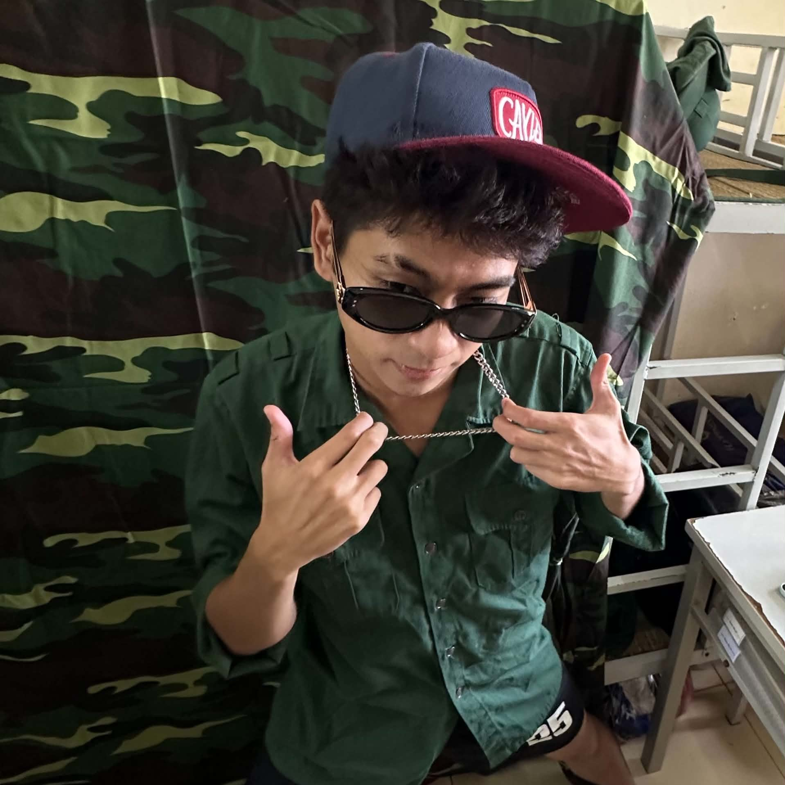

Đỗ Danh Long
Sinh viên Quản trị & Kinh doanh
- 🎓 Trường Đại học Kinh tế - ĐHQGHN
- 🆔 Mã SV: 25051615 • Lớp QH2025 E- QTKD4
- ✉️ Lớp QH2025 E- QTKD4
- ✉️ 25051615@vnu.edu.vn
Kiến tạo giá trị từ Tư duy số hóa
Bước vào giảng đường đại học không chỉ là việc tiếp thu tri thức lý thuyết, mà là quá trình tôi chủ động rèn luyện bản lĩnh để trở thành một công dân gương mẫu, một nhà quản trị nhạy bén trong kỷ nguyên công nghệ. Tôi tin rằng mọi mô hình kinh doanh chỉ thực sự đột phá khi được soi chiếu qua lăng kính của dữ liệu thực chứng và chuyển đổi số.
Hành trình của tôi là nỗ lực không ngừng để mỗi ngày trôi qua đều trở thành một phiên bản tốt hơn của chính mình. Bằng việc linh hoạt ứng dụng các công cụ AI vào đời sống và công việc, kết hợp cùng tư duy phản biện sắc bén và kỷ luật thép, tôi đã sẵn sàng chinh phục những nấc thang nghiên cứu chuyên sâu, mang lại những giá trị tích cực và bền vững cho cộng đồng xã hội.
💡 BỨC HÀNH TRÌNH TƯ DUY SỐ
| Hộp Trí Thức Năng Lực Số
Học phần đã giúp tôi chuyển đổi hoàn toàn tư duy từ thao tác công nghệ thụ động sang chủ động điều phối công cụ số:
- Quản lý dữ liệu khoa học: Làm chủ cách tổ chức cây thư mục, giúp tối ưu hóa thời gian trích xuất tài liệu.
- Thẩm định thông tin học thuật: Sử dụng toán tử nâng cao, kết hợp mô hình CRAAP đánh giá độ tin cậy của tài liệu.
- Kỹ nghệ Prompt Engineering: Áp dụng khung câu lệnh tiêu chuẩn ép AI có trọng tâm tư duy, bẻ gãy ảo giác thông tin.
- Điều phối dự án nhóm: Vận hành linh hoạt luồng tiến độ Agile/Kanban trên Trello, nâng cao hiệu suất cộng tác.
📊 CÁC CHỈ SỐ CỐT LÕI
| Khung Kỹ Năng Đang Phát Triển
⚡ PHÂN HỆ BÀI TẬP THÀNH PHẦN
Bài 1 - Mục 1.4
THAO TÁC CƠ BẢN VỚI TỆP TIN
Trình bày cấu trúc thư mục tối ưu và quy tắc đặt tên tệp chuẩn hóa không dấu, kèm ảnh chụp minh họa.
Bài 2 - Mục 2.4
TÌM KIẾM THÔNG TIN HỌC THUẬT
Trình bày kết quả tìm kiếm học thuật bằng các toán tử nâng cao về đề tài GenAI và bảng đánh giá CRAAP.
Bài 3 - Mục 3.4
VIẾT PROMPT HIỆU QUẢ
Trình bày sự so sánh thực nghiệm đối chiếu trực quan giữa Prompt ban đầu và Prompt cải tiến cùng kết quả.
Bài 4 - Mục 4.4
CÔNG CỤ HỢP TÁC TRỰC TUYẾN
Trình bày minh chứng cụ thể về việc sử dụng công cụ quản lý dự án nhóm Trello và phối hợp trực tuyến Docs.
Bài 5 - Mục 5.4
AI HỖ TRỢ SÁNG TẠO NỘI DUNG
Trưng bày sản phẩm dự án video "Phở Hà Nội" được hỗ trợ toàn diện bởi chuỗi tích hợp đắc lực từ GenAI.
Bài 6 - Mục 6.4
SỬ DỤNG AI CÓ TRÁCH NHIỆM
Trình bày cẩm nang quy tắc hành vi danh dự sử dụng AI có trách nhiệm dựa trên các quy chế liêm chính học thuật.
📁 CLOUD DRAWER
| Hệ Thống Tệp Tin Minh Chứng Gốc (PDF)
🏁 FINAL REPORT
| Kết Luận Chung
Môn học Nhập môn Công nghệ số và Ứng dụng AI đã mang đến cho tôi những thay đổi mang tính bước ngoặt về tư duy. Thay vì e ngại hay bị động trước sự phát triển vũ bão của công nghệ, tôi đã học được cách làm chủ nó, biến Trí tuệ nhân tạo thành "người cộng sự" đắc lực trong học tập và công việc.
Portfolio này là minh chứng rõ nét cho sự trưởng thành của bản thân qua từng tuần thực hành: từ những thao tác hệ thống cơ bản nhất đến việc điều khiển AI tạo sinh bằng các kỹ thuật Prompt kỹ thuật cao. Quan trọng hơn cả, việc thấm nhuần bộ quy tắc Liêm chính học thuật giúp tôi sử dụng công nghệ một cách có trách nhiệm và thấu đáo.
Chặng đường phía trước còn dài, nhưng với bộ kỹ năng số cốt lõi và tư duy phản biện đã được rèn giũa, tôi tự tin sẽ tiếp tục ứng dụng những kiến thức này để giải quyết các vấn đề thực tiễn, đóng góp vào sự phát triển chung của xã hội và không ngừng hoàn thiện bản thân để trở thành một chuyên gia nhạy bén trong tương lai.